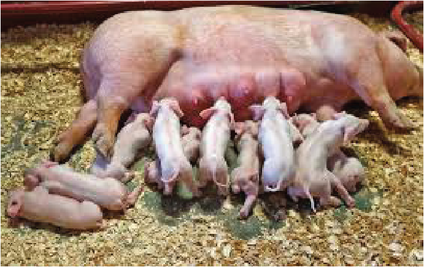

Agriculture for Secondary Schools
Figure 7.1: Lactating sow
As compared to other livestock, pig farming has the following relative advantages
to livestock keepers:
(a) High reproduction rate (prolificacy): Pigs can produce many piglets at
once (an average of 10-12 piglets), and sows (mother pigs) can give birth
2 times a year. Farmers can quickly grow their herd and have more pigs to
sell, leading to more income.
(b) Efficient use of feed: Pigs are very good at turning feeds into body weight.
Farmers can spend less on feed while getting pigs that grow fast and reach
market weight quickly.
(c) Flexible on a diet: Pigs can eat a variety of foods, including leftovers
from the kitchen, farm crops, and other by-products. Pig keepers can use
food that might otherwise be wasted, saving money on pig feed.
(d) High demand for pork: Pork is a popular meat in Tanzania, farmers can
quickly sell pigs and earn money, as there’s always a market for pork.
(e) Quick growth: Pigs grow fast and can be ready to sell in about 5-6 months
under good management. Pig keepers do not have to wait for so long to
make money from their pigs.
107
Student’s Book Form Two